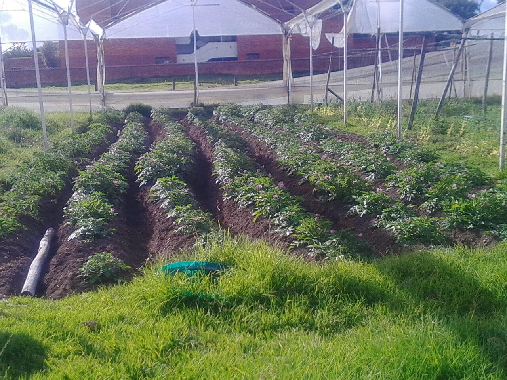
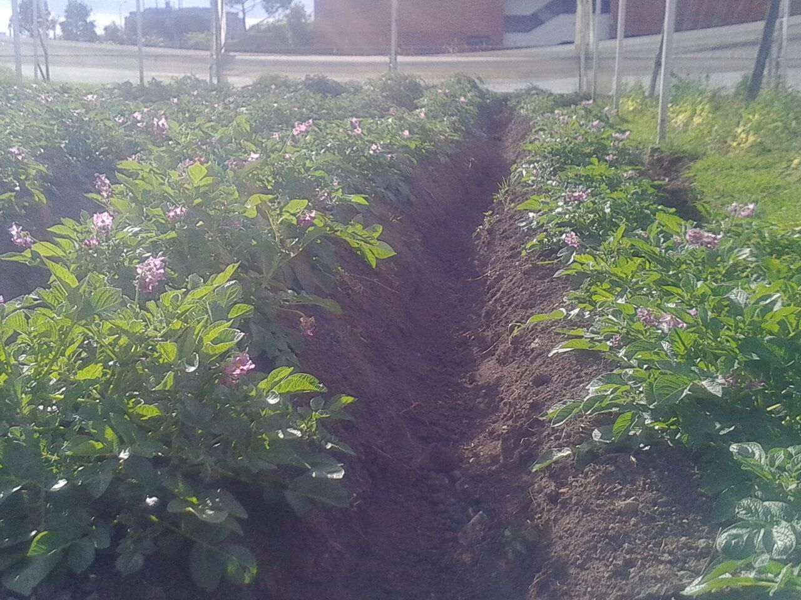
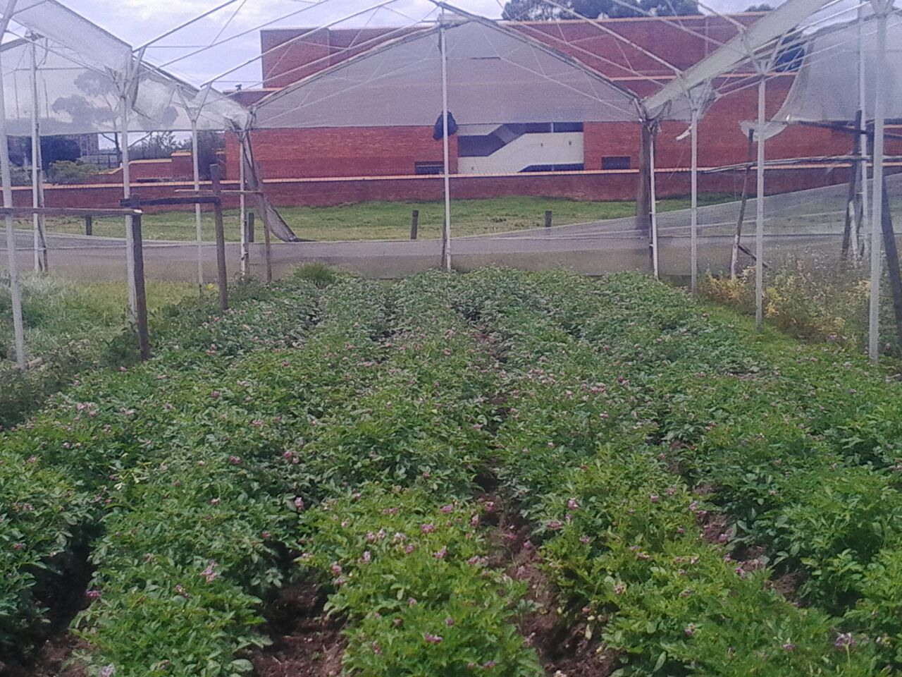

Basic Information Project
- Client: Basic Drawing Final Project
- Project date: From September to December, 2020
- Project Guidelines: https://drive.google.com/file/d/1FUPKP7DVMTSVRFXcMkmB3Ov4JSX-9Uy1/view?usp=sharing
- Final Report: https://drive.google.com/file/d/12WnxdU2krsjKbLPXfeayEAz-T4c0Efgq/view?usp=sharing
- Creation Process and Program Files: https://drive.google.com/drive/folders/1hbMnPL5NRJp_LvkX3nKhu9rFs-F8nyZF?usp=sharing
Project Description
This productive farm project was divided in three parts:
- Location the piece of land to build the house
- The house design
- The productive system design of the house
Our design was born as a compliment to beauty possessed by colonial houses, preserving the simplicity and elegance that this type of construction pose. The house is structured on a foundation surface of some isolated footings and foundation beams, allowing it to be earthquake resistant, a reinforcement was made in the stair area as it was considered that it could be a area in which there will be a lot of movement and we wanted guarantee its durability.
To develop this project we had to use some Autodesk software (AutoCAD, REVIT and CIVIL 3D) as well as geographic information capture software (ArcGIS, QGIS and GlobalMapper), for the creation of three-dimensional objects we used Sketchup software and to divide the work we design work schedules using Visual Basic from Excel.